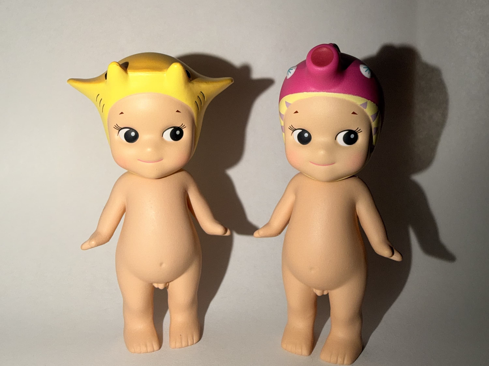

Secret Sonny Angels
Discover the rare surprises and hidden treasures that make collecting Sonny Angels so exciting!
The Excitement of Secret Figures

One of the most exciting parts of collecting Sonny Angels is the chance of finding a secret figure. These special designs are harder to find than regular figures and make opening a blind box even more exciting.
Secret figures are a fun surprise for collectors. Some people enjoy searching for specific rare designs, while others love discovering something completely unexpected.
Who Is Robby?

Robby is a special character associated with Sonny Angel. Finding a Robby figure can be an exciting surprise for collectors because these figures are much less common than regular Sonny Angels.
Whether you are hoping to find a secret figure or a Robby, every blind box brings the possibility of a new discovery!